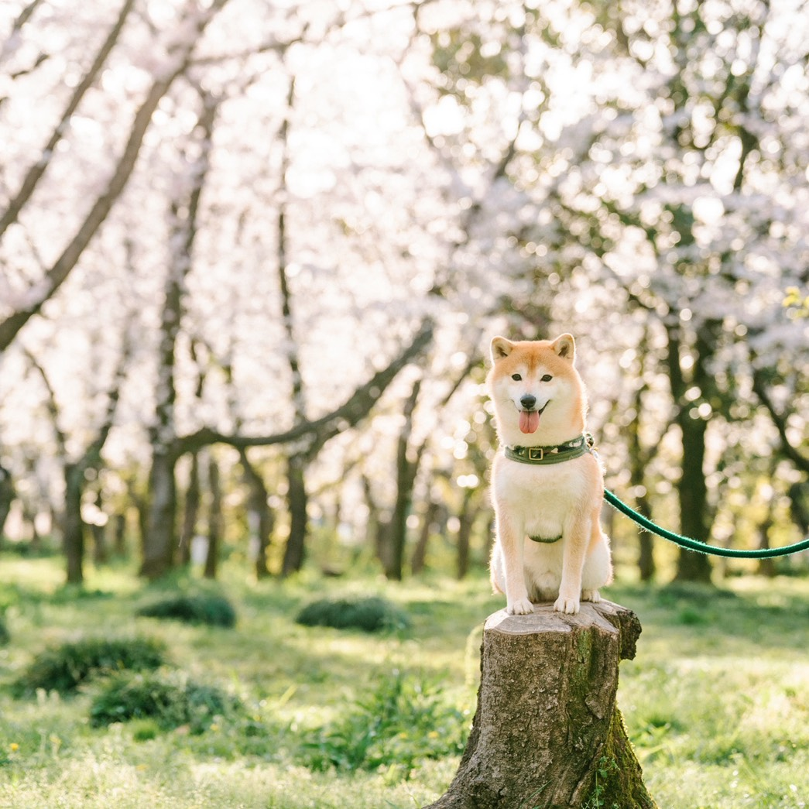
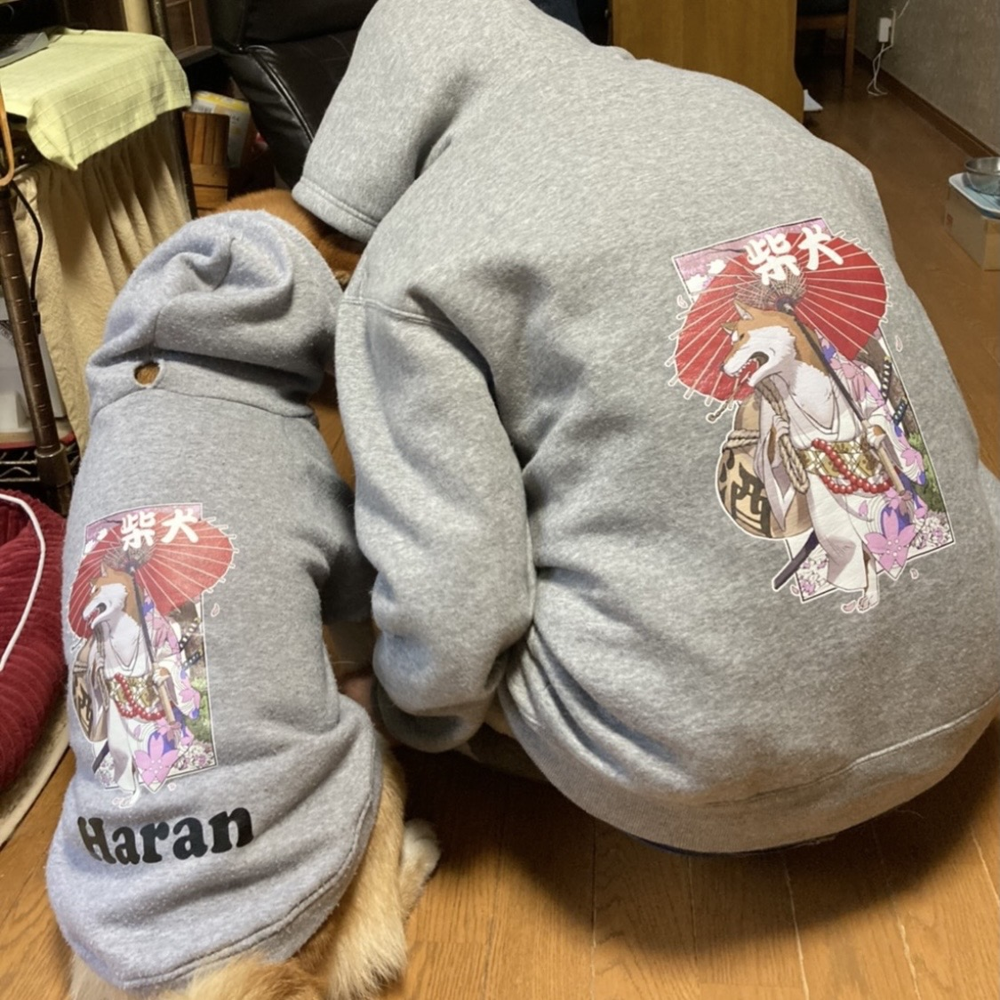
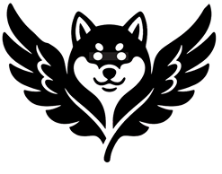

兼松 つばさ
愛知県生まれ。
愛犬の柴犬「ハラン」とともに埼玉へ移住しました。 朝はハランとの散歩から始まり、夜はハランをマッサージしながら癒されています。 そんな何気ない時間が、私にとって一番の幸せです。
海外留学や旅行、移住など、新しい環境や学びを楽しみながら、 「後悔するより行動する」をモットーに、興味を持ったことには積極的に挑戦しています。



愛知県生まれ。
愛犬の柴犬「ハラン」とともに埼玉へ移住しました。 朝はハランとの散歩から始まり、夜はハランをマッサージしながら癒されています。 そんな何気ない時間が、私にとって一番の幸せです。
海外留学や旅行、移住など、新しい環境や学びを楽しみながら、 「後悔するより行動する」をモットーに、興味を持ったことには積極的に挑戦しています。
現職でホームページのリニューアルに携わり、 Figmaを使用したワイヤーフレーム作成やWordPressでのページ制作を経験しました。 自分で設計したものが画面上で形になっていく楽しさを知り、ものづくりの面白さに興味を持ちました。 もともとデザイン関連の業務を行ってきましたが、エンジニアには「動かない原因を特定して修正する」 「実装方法を調べて再現する」といった、試行錯誤の先に答えへたどり着く面白さがあると感じています。 AI時代だからこそ、AIを活用しながら学び続け、AIに頼り切るのではなく、 課題を整理し適切な指示を行いながら、自分自身も成長し続けられるエンジニアを目指しています。
1.統計分析 2.デザイン制作 3.プロジェクト管理を中心とした業務に携わっています。
【統計分析】
SPSS、Excelを活用した
【デザイン制作】
【プロジェクト管理】
年間9回のセミナー運営における
GitHub：
メールアドレス：